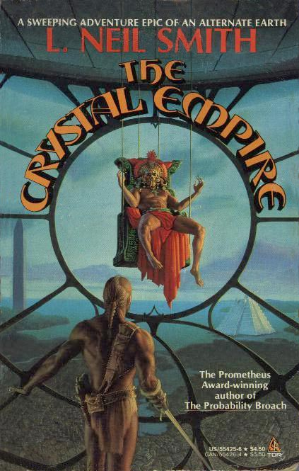

[Yes, this copy is kind of beat-up. Sorry about that.]
The Crystal Empire
by L. Neil Smith
Moslems rule the world in this adventure of an inventor and gunsmith in an alternate universe where the Black Plague killed 999 out of 1000 and technology, especially firearms, took the blame.
New York: a Tor Book,A Tom Doherty Associates Book, Published by arrangement with Bluejay Books 1989
449 pages, mass-market paperback
Library of Congress Catalog Card Number: [not given]
ISBN 0-812-55425-6
Canadian ISBN: 0-812-55426-4
First Tor edition: February 1989
Cover art by Michael Whelan